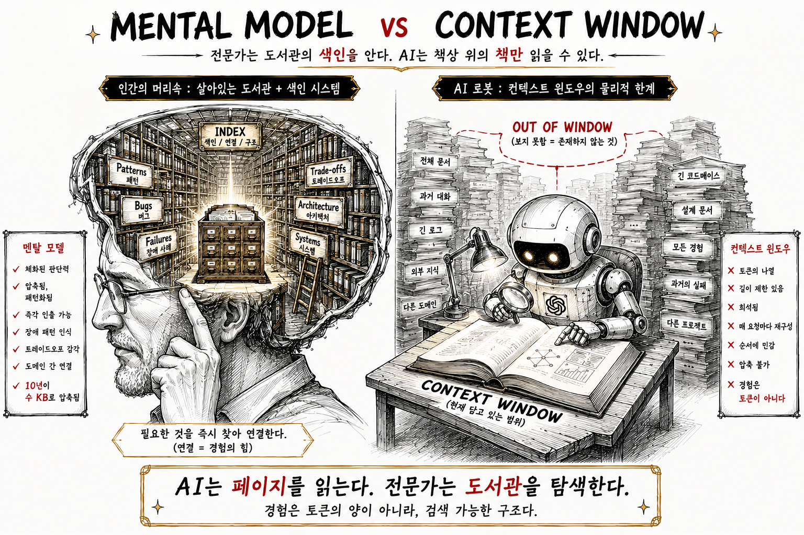
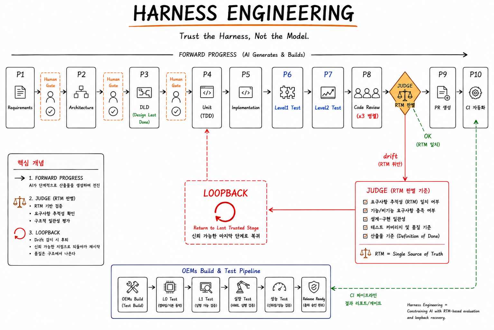
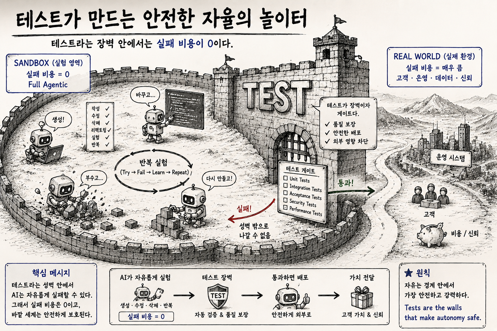
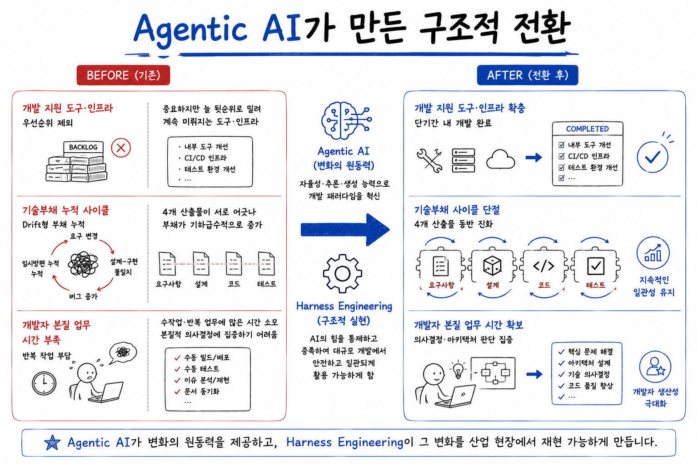
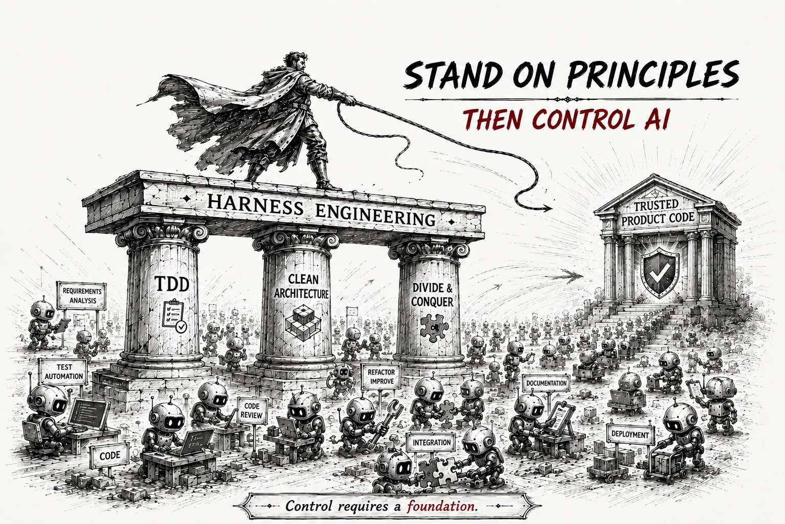

FREEDOBY
—
2026
·
Deck 05 / 06
Industrial
Human-in-the-loop.
Human-in-the-loop.
자율은 레버리지다 —
방향이 틀리면, 실패비용이 폭발한다.
방향이 틀리면, 실패비용이 폭발한다.
잘못된 방향이 레버리지를 만나는 곳에서 — 복구 비용이 폭발한다.
Human-in-the-loop은 그 거리를 짧게 끊는 운영 모델이다.
Human-in-the-loop은 그 거리를 짧게 끊는 운영 모델이다.
"leverage without direction is debt."
01 / 09
Setup · Leverage Cuts Both Ways
#agent-as-leverage #direction-decides
02 / 09
Setup · 레버리지의 양면02 / 09 · → 두 축
Limit 1 · 코드의 이유
#brownfield #tribal-knowledge #context-blind
03 / 09
코드 안의 침묵, 코드 밖의 컨텍스트
"이 if 문은
왜 여기 있는가."
왜 여기 있는가."
Brownfield · 코드 안의 침묵
10년 된 코드 한 줄에는 10년의 사고와 결정이 묻혀 있다.
AI는 그 결정의 이유를 못 본다 — 결과만 본다.
AI는 그 결정의 이유를 못 본다 — 결과만 본다.
예: 자동차 ECU의 magic number · 결제 시스템의 5년 전 hotfix · 의료기기 시그널 보정 상수
Tribal · 코드 밖의 컨텍스트
내부 정책 · 고객 히스토리 · 운영 관행 · 조직 정치 — 학습 분포 밖이다.
코드만 보고 판단하면 — 맞는 답이 틀린 답이 된다.
코드만 보고 판단하면 — 맞는 답이 틀린 답이 된다.
예: "이 고객은 환불 정책 예외" · "이 PR은 보안팀 사전 검토 필수" · "그 모듈은 인수합병 잔재"

AI는 코드를 읽지만 — 사람은 코드의 이유를 읽는다.
Limit 1 · 코드의 이유03 / 09 · → Limit 2
Limit 2 · Recovery Cost
#asymmetric-cost #leveraged-drift
04 / 09
② 복구 비용의 비대칭
성공 100번의 절약 ≪ 잘못된 방향 1번의 복구.
Therac-25
1985 – 1987
방사선 과조사
사망 3명 · 중상 다수
사망 3명 · 중상 다수
race condition · 소프트웨어 단독 안전 의존
Toyota UA
2009 – 2011
~12억 달러 합의
리콜 9백만 대
리콜 9백만 대
ETCS 펌웨어 결함 · MISRA 위반 다수
Knight Capital
2012
45분 · 4.4억 달러 손실
회사 사실상 소멸
회사 사실상 소멸
레거시 플래그 재사용 · 자동 배포 단독 실행
Boeing 737 MAX
2018 – 2019
사망 346명
~200억 달러 손실
~200억 달러 손실
MCAS 단일 센서 의존 · 검토 누락
이 영역에서 99.9% 정확도는 — 부족한 것이 아니다. 의미가 없다.
Limit 2 · 복구 비용 비대칭04 / 09 · → Spec-driven HITL

Spec-driven HITL
#spec-driven #spec-tag #spec-mining
05 / 09
HITL은 명세에 있다
Spec-driven HITL.
01
Spec Gate
요구사항 · 설계
사람이 방향을 정의한다 — AI가 따를 좌표.
잘못된 방향이 시작되지 않도록 의도를 박는다.
잘못된 방향이 시작되지 않도록 의도를 박는다.
02
Review Gate
구현 후
AI가 짠 코드가 spec과 일치하는지 검증.
방향 오차를 짧은 거리에서 끊는다.
방향 오차를 짧은 거리에서 끊는다.
03
Merge Gate
배포 직전
책임자의 sign-off · rollback 권한.
복구의 권한이 사람에게 보존된다.
복구의 권한이 사람에게 보존된다.
Brownfield의 자율은 명세부터 시작한다 — spec 없는 코드 = AI에게 이유 없는 코드, Spec mining이 brownfield 자율의 선결 조건이다.
Spec-driven HITL · Spec · Review · Merge05 / 09 · → 결론

Conclusion
#full-agentic-is-zero-recovery #hitl-is-the-handle
06 / 09
결론
Full Agentic은
복구 비용이 0인 곳 한정.
복구 비용이 0인 곳 한정.
산업은 복구 비용이 0이 아니다. 방향 오차가 누적되는 곳이다.
HITL은 단계가 아니라 — 레버리지의 핸들이다.
이는 deck4 Harness Engineering의 Extension Gate의 다른 이름이며 —
이름이 바뀌었을 뿐, 원리는 그대로다.
HITL은 단계가 아니라 — 레버리지의 핸들이다.
이는 deck4 Harness Engineering의 Extension Gate의 다른 이름이며 —
이름이 바뀌었을 뿐, 원리는 그대로다.
Conclusion · Full Agentic = 복구 비용 0 한정06 / 09 · → Effect
Effect · 기술 부채의 분해
#debt-cycle-broken #grow-together
07 / 09
Effect · 기술 부채의 분해
기술 부채 싸이클이 끊어지고 — 산출물이 함께 자란다.
Effect 1 · 기술 부채의 분해07 / 09 · → Effect 2
Effect · 본질의 회복
#focus-on-essence #custom-infra #backlog-cleared
08 / 09
Effect · 본질의 회복
사람은 본질로 —
AI가 나머지를 풀어낸다.
AI가 나머지를 풀어낸다.
01
본질 집중
판단 · 설계 · 결정 — 사람만 할 수 있는 일에 시간을 돌려보낸다.
02
개발지원 인프라
필요할 때 직접 만들어 — 개발 사이클에 맞춰 운영하는 커스텀 도구.
03
백로그 해소
우선순위에 밀렸던 일이 — 빠르게 풀린다. "나중에"가 "지금"으로.

AI가 노동을 가져가면 — 사람은 본질로 돌아온다.
Effect 2 · 본질의 회복08 / 09 · → Fin

Fin
#human-as-direction-gate #ai-era-engineer
09 / 09
실행은 AI가 —
방향과 책임은 사람이.
방향과 책임은 사람이.
되돌릴 수 없는 실패와, 사람만 아는 이유 —
이 둘이 AI 시대의 엔지니어를 작성자에서 방향의 게이트로 옮긴다.
이 둘이 AI 시대의 엔지니어를 작성자에서 방향의 게이트로 옮긴다.
FREEDOBY · Industrial HITL · Deck 05 / 06
Fin · 방향의 게이트09 / 09 · END